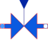

ValveSimple valve |

|
Information
This information is part of the Modelica Standard Library maintained by the Modelica Association.
Simple controlled valve.
Standard characteristic Kv=f (y) is given at standard conditions (dp0, rho0),
- either linear :
Kv/Kv1 = Kv0/Kv1 + (1-Kv0/Kv1) * y/Y1 - or exponential:
Kv/Kv1 = Kv0/Kv1 * exp[log(Kv1/Kv0) * y/Y1]
where:
Kv0 ... min. flow @ y = 0Y1 .... max. valve openingKv1 ... max. flow @ y = Y1
Flow resistance under real conditions is calculated by
V_flow**2 * rho / dp = Kv(y)**2 * rho0 / dp0
Parameters (12)
| medium |
Value: Modelica.Thermal.FluidHeatFlow.Media.Medium() Type: Medium Description: Medium in the component |
|---|---|
| m |
Value: Type: Mass (kg) Description: Mass of medium |
| T0 |
Value: Type: Temperature (K) Description: Initial temperature of medium |
| T0fixed |
Value: false Type: Boolean Description: Initial temperature guess value or fixed |
| tapT |
Value: 1 Type: Real Description: Defines temperature of heatPort between inlet and outlet temperature |
| LinearCharacteristic |
Value: Type: Boolean Description: Type of characteristic |
| y1 |
Value: Type: Real Description: Max. valve opening |
| Kv1 |
Value: Type: VolumeFlowRate (m³/s) Description: Max. flow @ y = y1 |
| kv0 |
Value: Type: Real Description: Leakage flow / max.flow @ y = 0 |
| dp0 |
Value: Type: Pressure (Pa) Description: Standard pressure drop |
| rho0 |
Value: Type: Density (kg/m³) Description: Standard medium's density |
| frictionLoss |
Value: Type: Real Description: Part of friction losses fed to medium |
Outputs (4)
| T |
Type: Temperature (K) Description: Outlet temperature of medium |
|---|---|
| T_a |
Type: Temperature (K) Description: Temperature at flowPort_a |
| T_b |
Type: Temperature (K) Description: Temperature at flowPort_b |
| dT |
Type: TemperatureDifference (K) Description: Temperature increase of coolant in flow direction |
Connectors (3)
| flowPort_a |
Type: FlowPort_a |
|
|---|---|---|
| flowPort_b |
Type: FlowPort_b |
|
| y |
Type: RealInput |
Components (1)
| medium |
Type: Medium Description: Medium in the component |
|---|
Used in Examples (1)
|
Modelica.Thermal.FluidHeatFlow.Examples Cooling circuit with pump and valve |